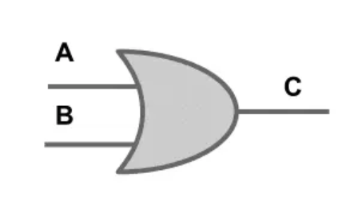
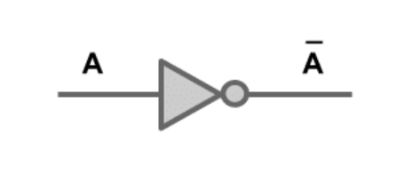

Porta lógica AND (E):
Utilizam-se do operador de produto lógico: a saída é igual a 1 se todas as entradas forem 1.
Se ao menos uma entrada for 0, a saída será 0.
ex: 1 X 0 = 0 ; 1 X 1 =1
Porta AND
Porta lógica OR (OU)
Utiliza-se do operador de soma lógica, a saída é igual a 1 se ao menos 1 das entradas forem 1 e a saída será 0 se todas as entradas forem 0.
ex: 1 + 0 = 1; 1 + 1 = 1; 0 + 0 =0

Porta OR
Porta lógica NOT (NÃO)
Utiliza o operador de inversão. Para um determinado valor na entrada, a saída possui um valor contrário ao da entrada.
Se a entrada for 1, a saída será 0. Se a entrada for 0, a saída será 1

Porta NOT
Microcontroladores
Aprendemos o básico da programação na linguagem C, com arduíno. Fazendo também alguns projetos, como o contador e o desafio do semáforo.
Sensores Ultrassônicos
Os sensores ultrassônicos emitem pulsos de ondas sonoras de alta frequência, que são direcionados para um objeto alvo. Quando as ondas sonoras encontram o objeto, parte delas é refletida de volta para o sensor.
O sensor mede o tempo que leva para o pulso ultrassônico viajar desde o sensor até o objeto e retornar como um eco. Com base no tempo de ida e volta do pulso, o sensor pode calcular a distância até o objeto usando a velocidade do som no meio em que as ondas estão se propagando.
Robótica
Em robótica, tivemos pouco tempo de aula, mas pudemos aprender coisas interessantes, tais quais: movimentação robótica; algumas linguagens de robôs que são próprias, como por exemplo a Mitsubish MFB4; tipos de robôs e pra que eles são utilizados e até algumas reflexões sobre o filme, que foi inspirado no livro "Eu, Robô". Tivemos uma aula prática na sala de robótica também, onde os alunos de mecatrônica ajudaram a controlar os braços do robô, movimentando em X, Y e Z.
.svg)